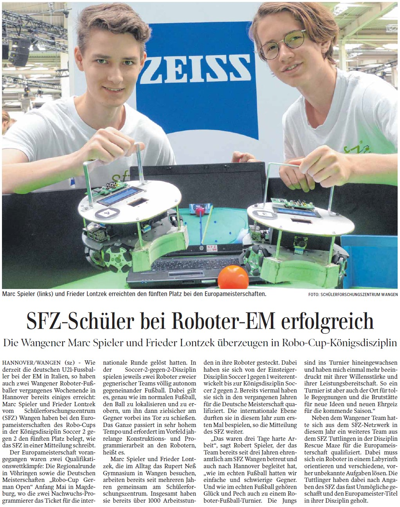
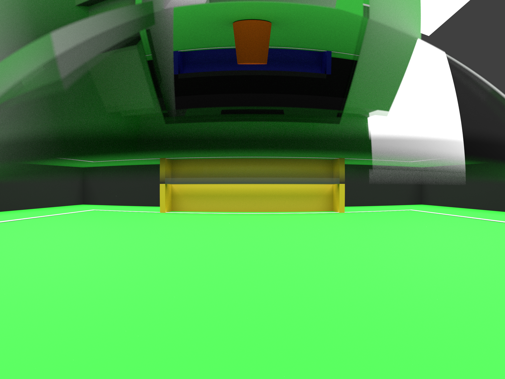
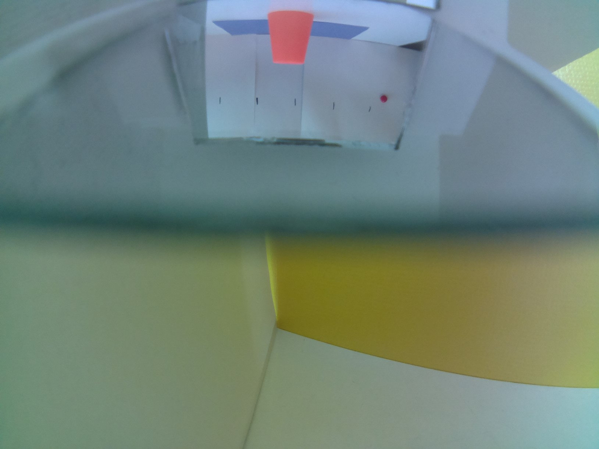
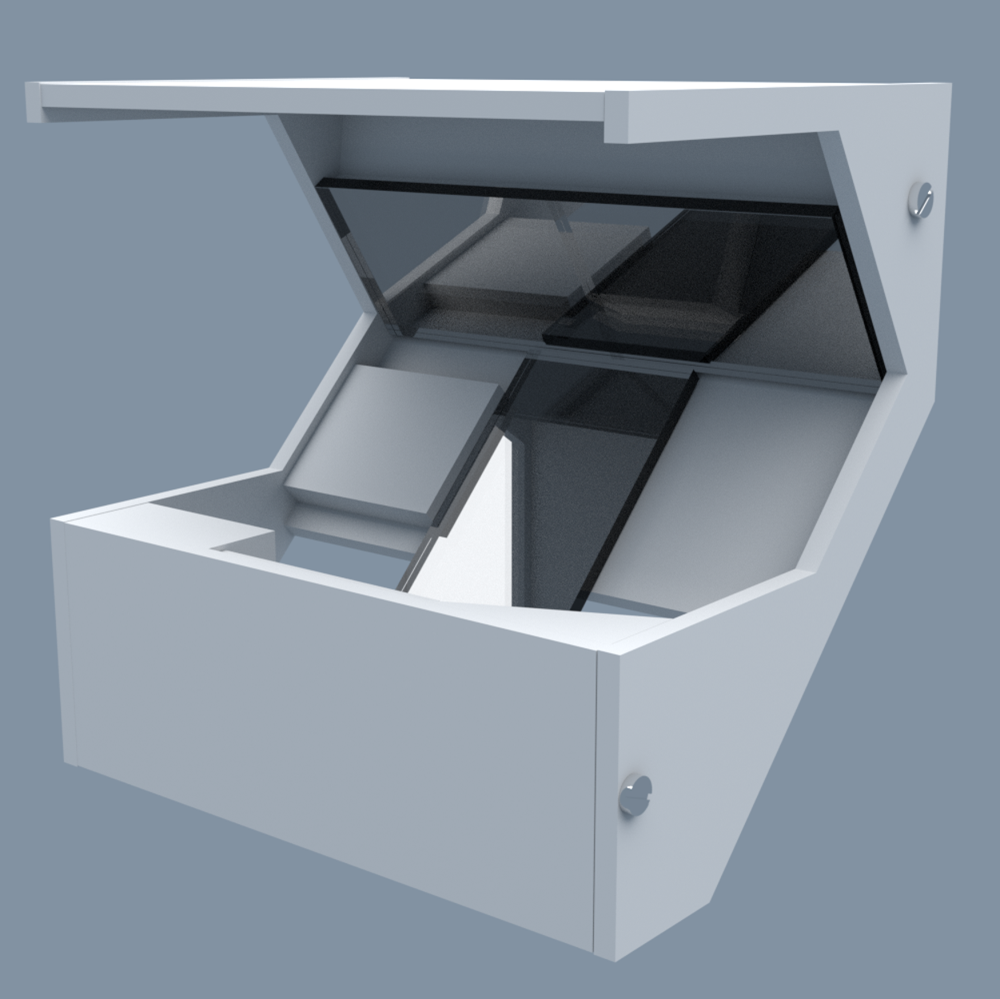

RoboCup championship 5th place
My contributions:
Ball and goal recognition using a Raspberry Pi and designing models for 3D printing.
Press:

Back mirror for the camera
Here you can see how I created the mirror construction. It is used for expanding the the robot's view to the back.
Simulation vs reality (from the camera's Point of View):


The model was simulated in blender to determine angle and position
...and tested out using a cardboard model
The final 3D-printed construction:

Video:
The video was animated and cut by me using Blender and Adobe Premiere Pro